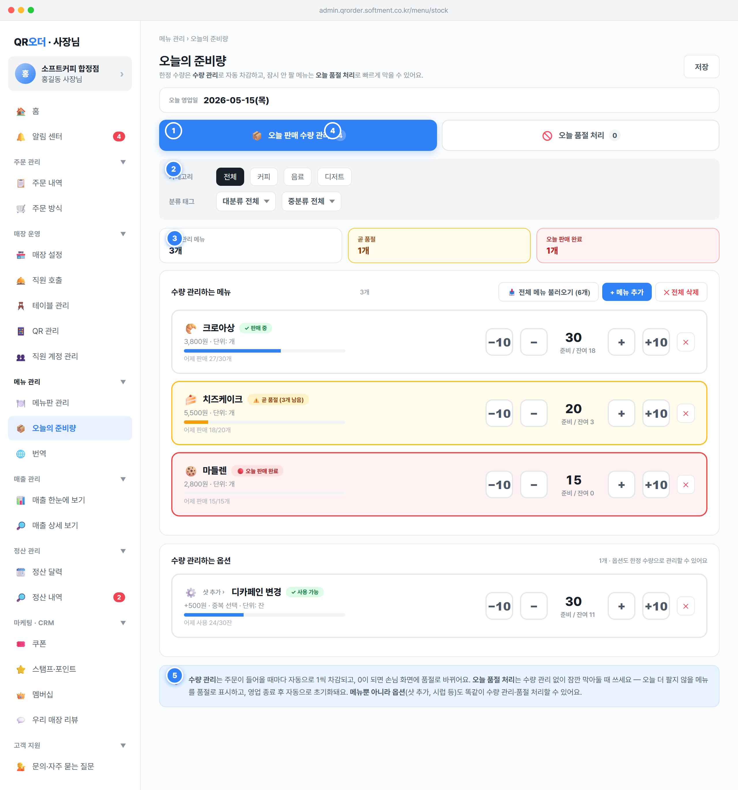

qty): 한정 수량 메뉴/옵션의 준비량을 등록하고 주문 시 자동 차감되도록 관리한다.soldout): 재고와 무관하게 오늘만 잠시 안 팔 메뉴/옵션을 빠르게 막는다..stk-tab). 클릭 시 state.stockTab 값을 'qty' 또는 'soldout'으로 설정하고 renderApp() 재렌더. 기본값 state.stockTab='qty'(코드 5610행)..on 클래스로 강조. 비선택 탭의 본문은 컨테이너 display:none으로 숨기고 선택 탭만 노출(SPA 내 전환, 페이지 이동 아님)..cnt) 표시: 수량 관리 탭 = 메뉴 수량 관리 건수 + 옵션 수량 관리 건수(items.length + optStockItems.length), 품절 처리 탭 = 메뉴 수동 품절 건수 + 옵션 수동 품절 건수(manualOutCnt + optManualOutCnt).state.stockTab: enum 'qty'|'soldout', 기본 'qty'. 클라이언트 UI 상태(서버 비저장).MENU_STOCK.items(enabled=true만) + OPT_STOCK.items(enabled=true만). 품절 처리: MENUS[].manualSoldOut + OPT_GROUPS[].items[].manualSoldOut.effectiveStatus(spec/02-menu.md §1.4) 및 메뉴판 관리 화면 카드의 준비량 배지(📦 잔여/준비)와 직접 연결.2026-05-15(목)). 실제 구현은 영업일 03:00 시작 기준 당일 영업일을 표시(SPEC §1.1)..menu-panel-filters). 메뉴 수가 많을 때 특정 분류만 좁혀 빠르게 점검하기 위한 영역..chip) 형태. "전체" + 매장에 존재하는 카테고리 값들. 클릭 시 state.stockCatFilter 설정 후 재렌더. 단일 선택.stockL2Filter), 중분류(stockL3Filter), 소분류(stockTag3Filter). 각 onchange로 state 갱신 후 재렌더. 기본 옵션 "대/중/소분류 전체".'all'이 아니면(stockFilterActive=true) 셀렉트에 .active 강조 + "✕ 초기화" 텍스트 버튼 노출. 클릭 시 4개 필터 모두 'all' 리셋.N개 / 전체 M개" 병기.'all'(코드 5583~5586행).state.stockCatFilter, state.stockL2Filter, state.stockL3Filter, state.stockTag3Filter — 각 string, 기본 'all'.MENUS 기준 cat / catL2 / catL3 / tag3의 distinct 값(공백 제거). ensureMenuExtras(m)로 분류 태그 필드 보강.it.menuId로 MENUS 조회 후 분류 비교, 품절 목록은 otherMenus 직접 비교.stockAllCats.length===0 && !hasStockTags).qty 본문). 한정 수량 메뉴별로 준비량(prepared)과 남은 수량(remaining)을 관리하는 카드 목록.OPT_STOCK) 목록을 같은 카드 UI로 함께 제공(샷·시럽 등 한정 옵션).−10 / − / 입력칸 / + / +10 버튼. changeStock(menuId, delta)는 prepared를 max(0, prepared+delta)로, remaining을 min(prepared, max(0, remaining+delta))로 갱신. 숫자 입력 onchange는 setStock(menuId, qty)로 절대값 세팅(음수 입력 시 0으로 보정).remaining===0 → .out "🔴 오늘 판매 완료"; 0<remaining≤lowAlert → .low "⚠️ 곧 품절 (N개 남음)"; 그 외 → .ok "✓ 판매 중". 진행바 너비 = round(remaining/prepared*100)%.loadAllMenus() — 미등록 메뉴를 준비량 0으로 일괄 추가), "+ 메뉴 추가"(openAddStockModal() — 모달에서 메뉴 선택, addStockForMenu는 준비량 50 기본 추가), "✕ 전체 삭제"(deleteAllStock()).removeStock(menuId)로 해당 메뉴 수량 관리 해제(확인창). 옵션 목록은 changeOptStock/setOptStockQty/removeOptStock로 동일 동작.prepared=50, remaining=50, unit='개', lowAlert=5, soldOutAlert=true; "전체 불러오기" 시 prepared=0, remaining=0.MENU_STOCK.items[] 필드: menuId(FK→MENUS.id), enabled(bool, true만 노출), prepared(int≥0 준비량), remaining(int≥0 남은 수량), unit(string 단위, 기본 '개'), lowAlert(int 곧 품절 임계값, 기본 5), soldOutAlert(bool 품절 알림), yesterdayPrep/yesterdaySold(전일 실적).SELECT ... FOR UPDATE로 동시성 보장(SPEC §1.7 / spec 재고 §4.1). remaining<quantity면 주문 거절.remaining = LEAST(prepared, remaining+환불수량), 복구 후 remaining>0이면 자동 품절 해제(재고 §4.2). 환불은 원거래일 영업일 매출에서 차감(SPEC §1.5).yesterday_prep=prepared, yesterday_sold=prepared−remaining+당일환불복구, remaining=prepared로 리셋하되 prepared 자체는 유지(사장님이 매일 직접 갱신).remaining=0 && soldOutAlert=true → 품절 알림 트리거, remaining≤lowAlert → 곧 품절 경고(재고 §4.3).stock!=null && sold≥stock) 및 메뉴판 카드 "📦 잔여/준비" 배지(클릭 시 본 화면 이동).prepared 변경 시 remaining은 항상 min(prepared, ...)로 클램프 → 준비량을 줄이면 잔여도 따라 줄어듦. 음수·빈 입력은 0 처리.soldout) 본문. 재고 수량 관리와 무관하게 오늘만 잠시 안 팔 메뉴/옵션을 빠르게 품절로 막는 영역.otherMenus) — 수량 관리와 역할을 분리해 중복을 피한다..qso-card)별 토글 버튼: 판매 중이면 "품절" 버튼 → setSoldOut(id,'out')로 manualSoldOut=true 설정. 품절 중이면 "↺ 판매 재개" 버튼 → setSoldOut(id,'on')로 manualSoldOut=false.manualSoldOut).clearAllManualSoldOut()(확인창 후 일괄 해제). 옵션 영역은 "↺ 옵션 품절 모두 해제"(clearAllOptSoldOut()).setOptSoldOut(gid,idx,'out'|'on')로 OPT_GROUPS.items[].manualSoldOut 토글..out-full 강조.MENUS[].manualSoldOut(bool, 기본 false), MENUS[].soldOutKind(enum temp|full, 기본 temp — temp=일시 품절(재판매), full=오늘 완전 품절). 옵션은 OPT_GROUPS.items[].manualSoldOut/soldOutKind(ensureMenuExtras/ensureOptExtras가 기본값 채움).otherMenus = MENUS.filter(수량관리 미등록 && status!=='숨김'). 옵션 대상은 OPT_STOCK에 없는 옵션 항목.manualSoldOut 자동 해제(품절 처리는 오늘 하루만 유효). full도 다음 영업일엔 자동 판매 재개.